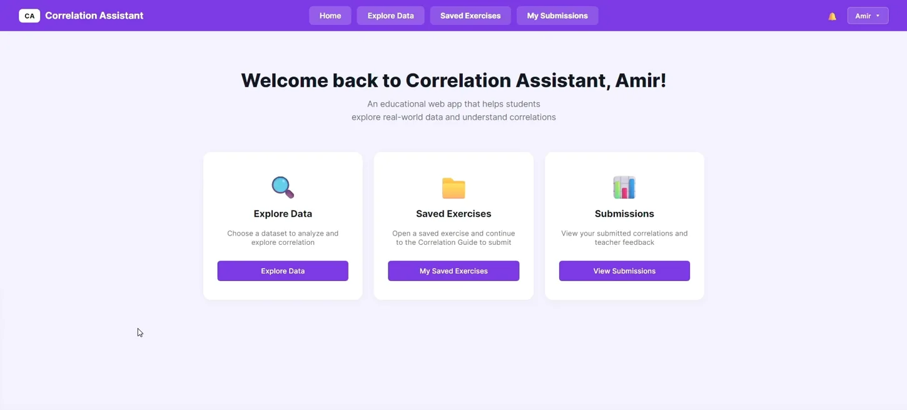
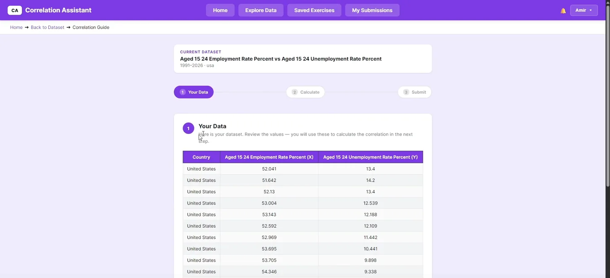
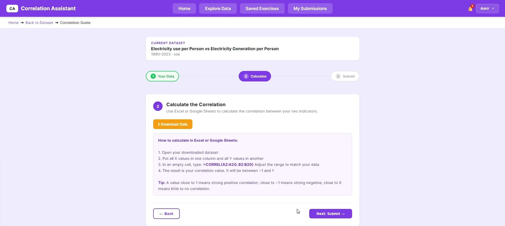
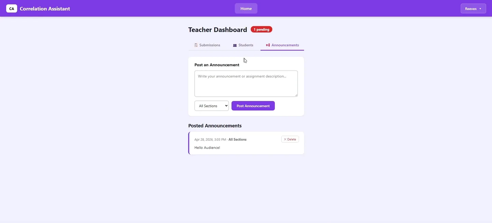

Correlation
Assistant.
An educational web application that makes it easier to explore global data, compare indicators, and complete correlation assignments.

Less time collecting data. More time understanding it.
Students working with GapMinder data needed to find indicators, prepare comparisons, and complete correlation assignments. The existing workflow involved several manual steps. Our team built a single application to bring data exploration and the assignment process together.
One workflow from exploration to submission.
Students can choose to compare a country over time or multiple countries in a single year, visualize indicators, generate datasets, and move through a guided correlation exercise.
The application also includes saved exercises, spreadsheet export, submissions, and instructor-facing tools for reviewing student work and posting announcements.




Building the systems behind the interface.
Backend and data
I worked on the FastAPI backend and integration with MariaDB, supporting how the application retrieves and uses structured indicator data. This involved connecting API functionality with the database layer.
Deployment
I also worked on deploying the application to a university Linux server using Nginx, connecting the hosted frontend to backend API routes.
This was a collaborative project. The interface, student and instructor experiences, and other backend components were built with my teammates. My focus was the API, database integration, and deployment work.
Good integration takes communication.
Working on the backend made it clear how important it is to understand the components other teammates are building. Changes to an API or data format can affect the frontend, and deploying a shared application requires coordination across the team.
Explore the GitHub repository ↗